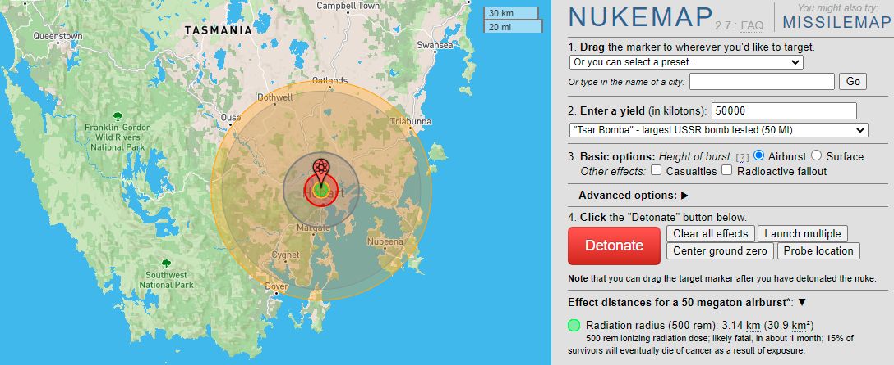

How I find stuff out for my books
I have a degree which dates back to the 90s in astronomy, so you'd think I'm well qualified to write speculative fiction? Well, it helps, but I still find there are lots that I need to research. Partly because we know a lot more about the planets thanks to new science, and partly because the science needed for almost anything is incredibly diverse, and I'm not an expert in everything!
I've chosen to write hard science fiction (I need to remember sometimes that no-one put a gun to my head to do it), which means trying to keep the science as authentic as possible. But the truth is, I'm a scientist and a generally curious person, so I get a big kick out of having an excuse to learn something new.
Here are just some of the questions which have caused me to have to down tools and research over the book series,
- Is it possible to grow plants in Lunar soil?
- What's the composition of the Moon, what elements are abundant, what elements are tricky?
- What's the history of food in space?
- Is having your period in space substantially different?
- How does IVF work?
- What kind of blood types can children inherit from their parents?
- How do I simulate a nuclear explosion on Earth?
- How do spacesuits work?
- How fast did Lunar rovers go? How fast could you drive on the Moon given it is off-road, the surface is powdery and the gravity lower?
- What does the Moon smell like?
- Would swimming in a colony on the Moon feel easier?
- How well could a chicken fly in one sixth gravity?
- Can dogs be vegetarian?
Here is a list of some of my favourite tools and sites for helping me plan.
I give you 'the Moon'
I assume here I don't need to introduce you to Google for general questions, but did you know there's a Google Moon website? Sadly, one of my issues is I write a lot about my colony on the South Pole, which doesn't have the best maps!
The Lunar Phase today
The Melody Harper series uses a series of journal entries, and for some I need to be mindful of the Lunar phase to work out if an area is in daylight of nighttime (remembering a Lunar day is 28 Earth days).
The Cosmic Train Schedule
This site has been really helpful! It gives launch windows between different planets for the next hundred years, and has helped me plan out key events and when items would get critical
Nuke Map
With apologies to Tasmania
Okay ' this got dark fast. But sometimes you need to know what the blast radius effect is of dropping a nuke on a certain location
NASA
Where would we be without this and the other wonderful space organisations?
I've used some of the photos from their pages on this site (because I obviously can't go out and take those pictures myself)
YouTube educational channels
There are a number of really great commentators on space related topics out there, and here is a list of my favourites. Many of them are looking at historical missions, which I find helpful as often I'm using what's worked in the past to extrapolate to the future.
Curious Droid
I know it's wrong to have a favourite, but Paul's channel is my primary go-to. He's very laid back, and I love his work. Like Amy below, focuses primarily on historical missions. Check out his video on Salyut 7 which is a particular favourite of mine.
Vintage Space
Amy focuses mainly on historical missions, which she does really well. I recommend checking out her video on Apollo Applications planned Venus flyby which is really intriguing (but never happened).
[Amy has been an influence on a character of mine in the Melody Harper universe. Mary is known as 'Space Girl' and works out at the Lunar observatory providing the occasional science commentary video]
Scott Manly
Very similar to both Curious Droid and Vintage Space, I find Scott focuses a little more on current events in space.
Isaac Arthur
This channel focuses mainly on speculative technology (his channel name is a merge of Isaac Asimov and Arthur C. Clarke btw), so this channel is a must for all sci-fi writers. Isaac has a speech impediment, and good humouredly refers to himself as talking like a sci-fi Elmer Fudd, so please be kind.
One of my favourites of his is on (no surprises) building a Lunar colony.
Homemade Documentries
This channel has a great series on remastered Apollo missions, which I've devoured. Especially around Lunar Rover excursions.
What really fascinates me about this series is the volume of incidents which occured during NASA flights and how the crew worked with Mision Control to rectify them. We sometimes only think of this process in terms of Apollo 13 (and the movie of the same name).
Kurzgesagt
The crazy animated science show that answers a lot of questions you didn't think you needed answers on. I recommend the video on nuking the Moon (possible spoilers though).